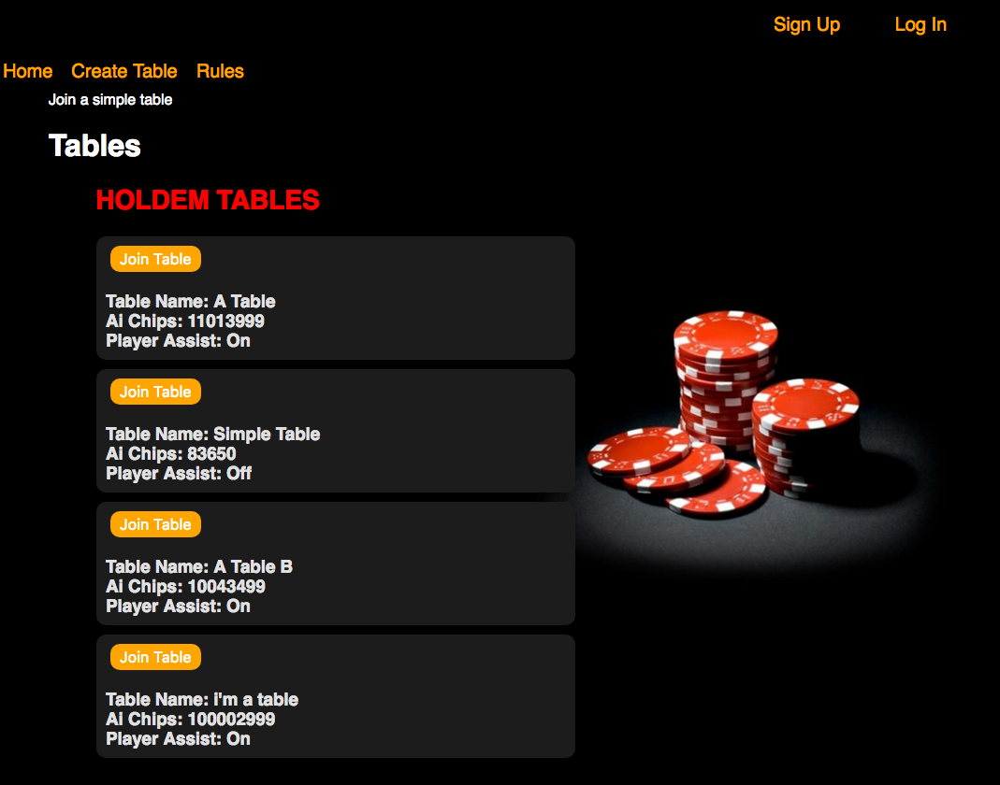
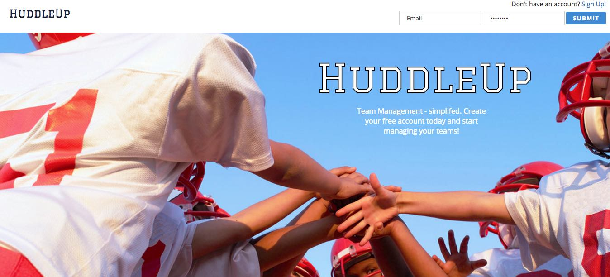
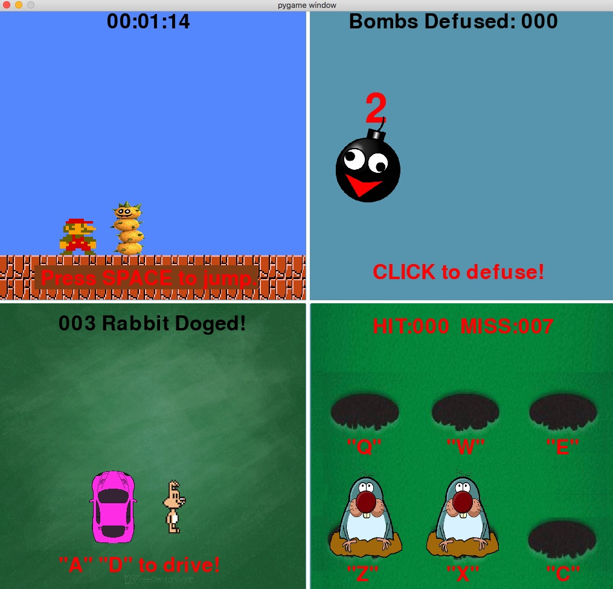

Jonathan Shaw
Full Stack developer
My name is Jonathan Shaw, and I am a Full Stack Web Developer based in Atlanta, GA. I attended the Georgia Institute of Technology for my undergraduate degree where I majored in Industrial Engineering. After graduation I held a variety of positions from IT support to designing assembly lines in Shenzhen, China. It wasn't long before I discovered my passion for coding.
I decided I was ready for a new challenge and moved on to web development. Through self-studying using online resources and motivation, I was able to develop simple programs with simple functions. In order to progress and code professionally, I enrolled in DigitalCrafts' full-time full-stack immersive coding bootcamp since February of 2017.
Transitioning from the manufacturing field into the programming field, I've noticed similarities between the two skill sets. Instead of creating working instructions for how many times a worker needs to rotate a screw, I am now providing instructions for how many times a computer needs to traverse a loop.
Check out my projects to see what I've been working on
I decided I was ready for a new challenge and moved on to web development. Through self-studying using online resources and motivation, I was able to develop simple programs with simple functions. In order to progress and code professionally, I enrolled in DigitalCrafts' full-time full-stack immersive coding bootcamp since February of 2017.
Transitioning from the manufacturing field into the programming field, I've noticed similarities between the two skill sets. Instead of creating working instructions for how many times a worker needs to rotate a screw, I am now providing instructions for how many times a computer needs to traverse a loop.
Check out my projects to see what I've been working on
front-end
HTML5CSS
Bootstrap
React/Redux
JavaScript/jQuery
AJAX/JSON
Responsive Design
back-end
Node.jsExpress
PostgreSQL
Python
Matlab
R
Development Tools
Amazon Web Services (AWS)Git
Postgres

This is a trainer app for the card game Texas Holdem, the users will be able to create an account and try to win chips against an AI opponent. To assist the player, the player are given an option when creating a table to toggle on a player assist button that can display the winning percentage of the player's current hand.
This win chance is calculated via simulation, filling in the rest of the unknown cards 200 times to determine how many times the current hand will win. This algorithm is also applied to the AI to determine what action the AI should take, providing the player with a challenge.
The Texas Holdem Trainer is a full-stack project coded in javascript and html. It is algorithm heavy with constant communication between the frontend and the backend to update chip information to the database.
This win chance is calculated via simulation, filling in the rest of the unknown cards 200 times to determine how many times the current hand will win. This algorithm is also applied to the AI to determine what action the AI should take, providing the player with a challenge.
The Texas Holdem Trainer is a full-stack project coded in javascript and html. It is algorithm heavy with constant communication between the frontend and the backend to update chip information to the database.

HuddleUp itself is a little league team management helper, it allows users to create an account and then either create/join a team for their children. In the team page users can view team rosters, send messages to other team members and view upcoming events. Owners of the team will have special access to functions such as creating an event or sending a text message to all related members of the team.
HuddleUp is an full-stack project coded in javascript and html. It is a database heavy project with constant communication between front-end and back-end using express.
HuddleUp is an full-stack project coded in javascript and html. It is a database heavy project with constant communication between front-end and back-end using express.

This mini-game is coded using Python using Pygame. The player will be able to play four mini games at once. This is made capable by dividing the canvas into four separate blocks, each block initiating a separate instance of a class running a different game. Each game is running its own algorithm and game logic.
Get in touch